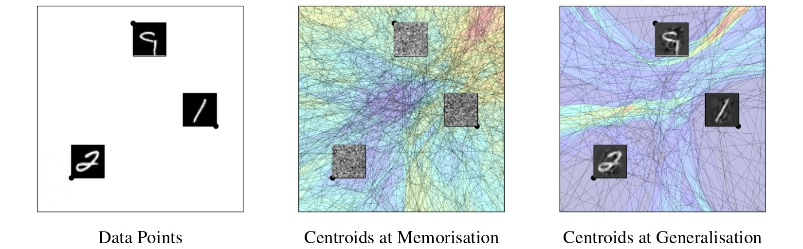

Jacobian Alignment Explains Grokking andCentroid Alignment Identifies It
- Thomas Walker Rice University
- Ahmed Imtiaz Humayun Rice University
- Randall Balestriero Brown University
- Richard Baraniuk Rice University

Abstract
This paper aims to better understand and accelerate the training dynamics of deep networks that lead to delayed generalisation and emergent robustness to input perturbations, known as grokking. Prior work has associated phenomena like delayed generalisation with the transition in a deep network from a linear to a feature learning regime, and emergent robustness with changes to the network's functional geometry, in particular the arrangement of the so-called linear regions in deep networks employing continuous piecewise affine nonlinearities. Here, we explain how grokking is realised in the Jacobian of a deep network and demonstrate that aligning a network's Jacobians with the training data (in the sense of cosine similarity) ensures grokking under a low-rank Jacobian assumption. Our results provide a strong theoretical motivation for the use of Jacobian regularisation in optimizing deep networks, which we show empirically to induce grokking much sooner than more conventional regularizers like weight decay. Moreover, we introduce centroid alignment as a tractable and interpretable simplification of Jacobian alignment that effectively identifies and tracks the stages of deep network training dynamics.
